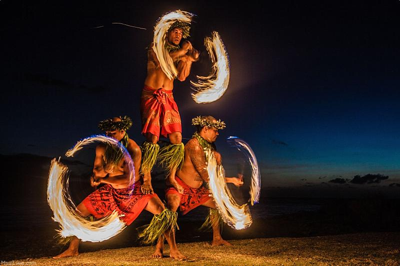
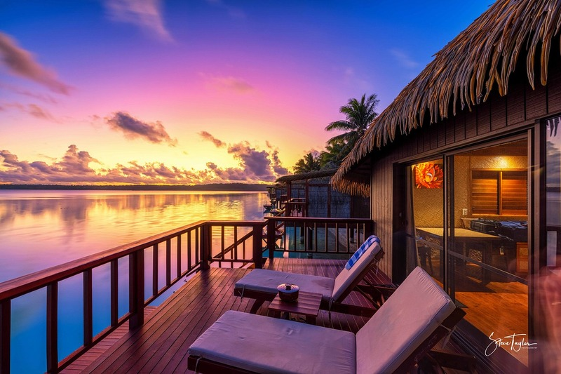
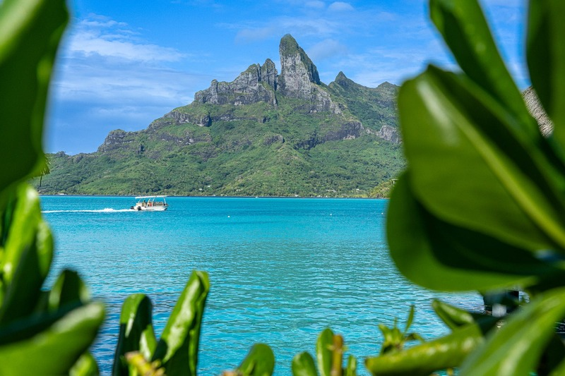

Bora Bora is a small South Pacific island northwest of Tahiti in French Polynesia. Famous for its turquoise lagoon, lush volcanic peaks, and luxury overwater bungalows, it’s often called the ultimate honeymoon paradise. But it’s more than just a pretty face — it’s a whole vibe.
Culture & People
The people of Bora Bora are warm, welcoming, and deeply rooted in Polynesian tradition. Expect flower crowns, rhythmic music, and dance performances that feel both ancient and alive.
Fun Facts
- Bora Bora has no “B” in the native Tahitian language — it’s actually pronounced *Pora Pora*, meaning "first born".
- It’s a former U.S. military supply base during WWII — and traces of that still exist!
Local Food & Landmarks
Must-try dishes include poisson cru (raw tuna marinated in lime and coconut milk) and tropical fruit straight from the source. For landmarks, Mount Otemanu rises dramatically in the center, offering hikes and boat tours that feel like stepping into a movie.